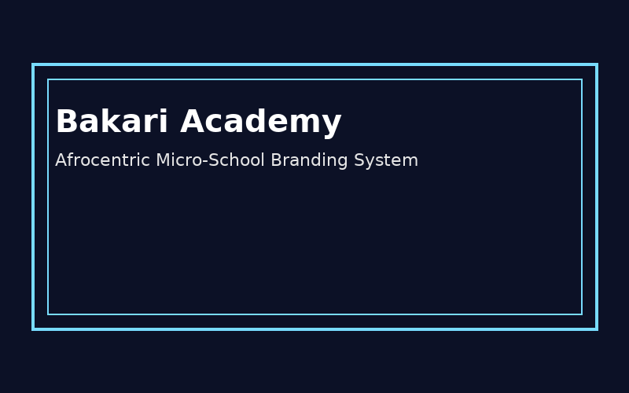
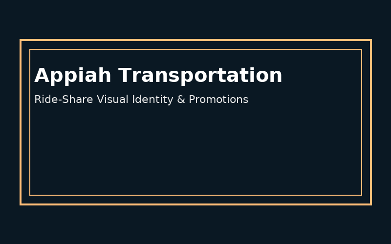
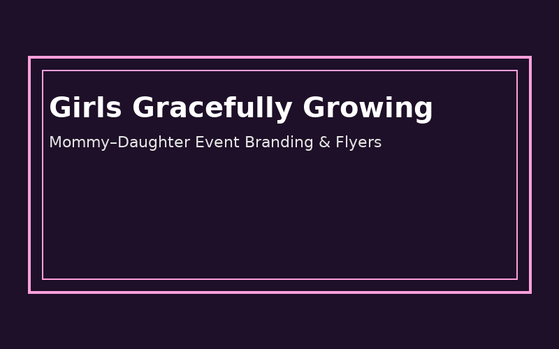

Brand systems and visual identities created for my own ventures and community-centered initiatives.

Brand System • Education
Bakari Academy – Afrocentric Micro-School Branding
Developed the full brand identity for Bakari Academy, including logo concepts, color palette,
typography, classroom signage, and social templates that celebrate African heritage and joyful learning.
Logo
Print
Social

Transportation Brand
Appiah Transportation – Ride-Share Visual Identity
Created a bold, memorable visual direction for Appiah Transportation featuring custom car silhouettes,
playful colorways, and app-inspired layouts for social media, print collateral, and digital mockups.
Brand Kit
Illustration
Digital

Community Brand
Girls Gracefully Growing – Event & Community Branding
Designed a soft, feminine visual identity for recurring mommy–daughter date events, including logos,
social posts, invitations, and event signage with a warm, welcoming aesthetic that resonates with families.
Events
Social
Print